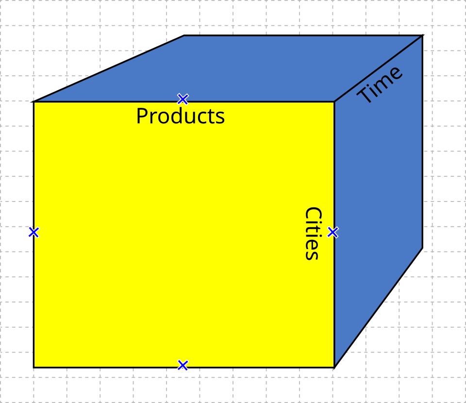
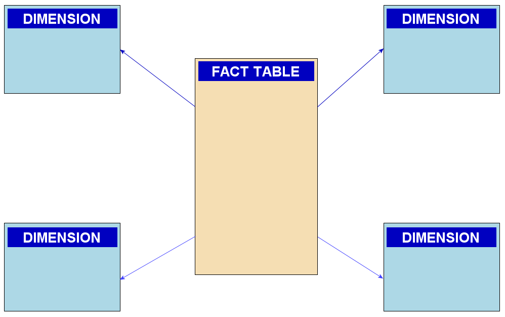
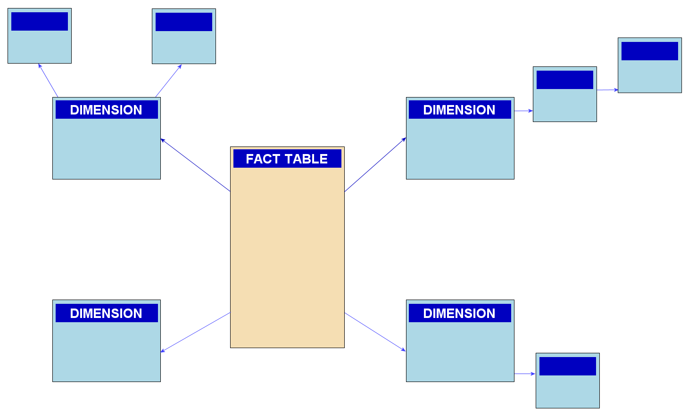

Business Intelligence
- New to business or databases? Read Unit 0 first (about 20 minutes, tea-shop examples).
- Then take Units 1, 2 and 3 in order. Sections that answer an assignment question or a 2023 question carry a tag naming it. Every section ends with a "10-mark answer" box: the exact skeleton to write in the exam, with marks.
- Finish each unit with its flashcards, then look at the Expected Paper, which also has a checklist of all 24 assignment questions.
Why the notes follow the assignments. The assignments are the professor's own question bank: 4 assignments × 6 questions = 24 questions, including case studies for healthcare, banking, retail, university and company data. The 2023 paper (TIT-721) was 5 × (a/b) questions of 10 marks, and its questions were applied ("your university", "what according to you"). So each answer here has a definition, an example and a diagram, and each case study has a repeatable template.
Business and Data from Zero
How a business works, what data is, and why businesses keep two very different kinds of database, explained with a tea shop.
Not a syllabus unit by itself, but every idea here (departments, business process, data vs information, table, row, column, transaction, report, structured and unstructured data) appears in Units 1–3 and in exam answers. Read it once slowly. It takes about 20 minutes.
Step 0.1How a business is organised: from tea stall to company
Imagine Ravi's tea stall. On day one, Ravi does everything himself: buys milk, makes tea, takes money, counts the cash. Ten years later "Ravi's Chai" has 50 shops, and the jobs have split into departments:
| Function (department) | What it does at Ravi's Chai |
|---|---|
| Purchasing / supply chain | Buys milk, tea leaves and cups from suppliers |
| Operations / production | Makes the tea in every shop |
| Sales & marketing | Sells tea, runs offers, handles customers |
| Finance & accounts | Tracks money in and out, pays bills, files taxes |
| Human resources (HR) | Hires, trains and pays staff |
A business process is a sequence of steps that crosses these departments to get something done.
- Enterprise
- A business organisation, usually a large one
- Function
- One kind of job done in the business (sales, finance, HR…)
- Business process
- A chain of steps, often across departments, that produces a result for a customer
Step 0.2Data, information, knowledge
Information: "Shop 12 sells 40% of its tea between 7 and 9 am."
Knowledge / decision: "Put two staff on the morning shift at Shop 12 and one in the afternoon."
- Data
- Raw, unorganised facts and figures
- Information
- Data processed and organised so it is meaningful
- Knowledge
- Understanding gained from information, used to make decisions
Step 0.3What a database is: tables, rows and columns
| sale_id | shop | time | item | price (₹) |
|---|---|---|---|---|
| 90231 | 12 | 07:05 | Masala chai | 20 |
| 90232 | 12 | 07:06 | Samosa | 15 |
| 90233 | 4 | 07:06 | Masala chai | 20 |
- The schema is the fixed design of the table: these five columns, in this order, with these types (number, time, text).
- The primary key (sale_id) is a column whose value is different for every row, so each row can be found exactly.
- A question in SQL looks like:
SELECT SUM(price) FROM sales WHERE shop = 12;meaning "total sales at shop 12".
- Database / DBMS
- An organised store of data / the software that manages it (e.g. MySQL, Oracle)
- Table, row, column
- A grid of data; one record; one attribute of every record
- Schema
- The fixed design of the tables: which columns and what types
- Primary key
- A column that uniquely identifies each row
- SQL
- Structured Query Language, used to ask a database questions
Step 0.4Two jobs for data: running the business vs understanding it
| Running the business (OLTP) | Understanding the business (OLAP) | |
|---|---|---|
| At Ravi's Chai | The billing machine at the counter | The owner's monthly report and dashboard |
| Typical question | "Record this ₹20 sale." "Is Shop 12 out of milk?" | "Which shops grew fastest in the last 3 years, by month and by product?" |
| Work | Thousands of tiny inserts and updates per minute | A few huge read-only queries over millions of rows |
| Data | Current, detailed | Historical, summarised |
| Users | Cashiers, clerks | Managers, analysts |
Why not use one system? Because the owner's giant 3-year report would slow down every cashier's billing. So data is copied regularly from the OLTP systems into a separate data warehouse, where it is cleaned and arranged for analysis. That copying is called ETL (Extract, Transform, Load).
- Transaction
- One small unit of business work recorded in the database (a sale, a payment)
- OLTP
- On-Line Transaction Processing: systems that record day-to-day transactions
- OLAP
- On-Line Analytical Processing: systems for analysing large amounts of historical data
- Data warehouse
- A separate store of cleaned, historical data from across the business, built for analysis
- ETL
- Extract, Transform, Load: copying data from source systems into the warehouse
- Dimension / measure
- A way to slice data (shop, product, time) / the number being analysed (sales)
Step 0.5Structured, semi-structured and unstructured data
| Type | Everyday example at Ravi's Chai | Easy to search? |
|---|---|---|
| Structured | The sales table above | Yes: fixed columns, SQL works |
| Semi-structured | An online order sent as XML or JSON: <order><item>chai</item><qty>2</qty></order> | Partly: labels (tags) say what each value is, but orders can have different fields |
| Unstructured | Customer reviews, WhatsApp complaints, CCTV video, photos of receipts | No: needs text mining, image analysis and so on |
- Structured data
- Data in a fixed format of rows and columns
- Semi-structured data
- Data with tags or labels but no rigid schema (XML, JSON, email headers)
- Unstructured data
- Data with no predefined format (text, images, audio, video)
- XML
- eXtensible Markup Language: text with <tags> that label each piece of data
Step 0.6So what is "Business Intelligence"?
- Collect: transactions from OLTP systems (billing, ERP, CRM), plus outside data.
- Integrate and store: ETL into a data warehouse or data marts.
- Analyse: OLAP cubes, reports, dashboards, data mining.
- Decide and act: managers use the insights, then measure the results, which feeds back into step 1.
How to use this in the exam: BI questions are often applied ("in your university…", "what according to you…"). Give the definition, then an example from a place you know (your college, a shop, a bank), exactly as the tea shop was used here.
Flashcards · Unit Zero
If you can answer these in your own words, you're ready for Unit 1.
A Business View of Information Technology
How a business is organised, why it uses IT, the Baldrige framework, business process management, the connected world, and packaged vs custom software.
Syllabus: business enterprise organisation, functions and core business processes · Baldrige Business Excellence Framework (leadership, strategic planning, customer focus, measurement/analysis/knowledge management, workforce focus, process management) · key purpose of using IT in business · enterprise applications (ERP/CRM etc.) and bespoke IT applications. The 2023 paper asked Q1–Q3(a) from this unit, and Baldrige twice.
§ 1.1How a business is organised, and the IT applications a university uses
Functions and processes
| Core functions (create value) | Support functions (keep it running) |
|---|---|
| Sales & marketing · Product/service delivery (operations, supply chain) · Research & development · Quality · Customer service | Finance & accounts · Human resources · Information technology · Legal & compliance · Administration, procurement |
| Process | Steps |
|---|---|
| Order-to-cash | Enquiry → quotation → order → delivery → invoice → payment |
| Procure-to-pay | Requisition → purchase order → goods receipt → vendor invoice → payment |
| Hire-to-retire | Recruit → onboard → payroll → appraisal → training → exit |
Information needs differ by level: strategic (top managers: trends, what-if), tactical (middle managers: summaries and exceptions) and operational (staff: detailed, real-time). Operational needs are met by OLTP, and the other two by OLAP and BI (Unit 3).
2023 Q1(a): automated IT applications in your university
Frame it first: the university's "customers" are students, recruiters and funding bodies, and its core process runs from admission to alumni.
| Application | What it automates | Benefit |
|---|---|---|
| Admission portal | Applications, fee payment, document checks, merit lists | No queues, transparent selection |
| ERP / student information system | Records, registration, attendance, timetable, results | One source of truth |
| Learning management system (Moodle, Google Classroom) | Course material, assignments, quizzes, grading | Learn anytime; plagiarism checks |
| Examination system | Hall tickets, seating, result processing, mark sheets | Speed, accuracy, secure grading |
| Fee and finance system | Online fees (UPI), scholarships, payroll, budgets | Audit trail, easy reconciliation |
| Library system (KOHA, SOUL) | Catalogue, barcode/RFID issue and return, e-journals | Self-service, stock control |
| HRMS | Faculty recruitment, leave, appraisal, payroll | Transparent HR |
| Hostel and transport | Room allocation, mess billing, bus tracking | Logistics efficiency |
| Placement portal / CRM | Recruiter contact, drive scheduling, eligibility | Better placements |
| Biometric attendance, CCTV, campus Wi-Fi | Attendance, security, connectivity | Real-time monitoring |
| BI dashboards (NAAC / NIRF) | Pass %, placement %, research output, feedback | Data-driven decisions and accreditation |
Closing point: separate systems create silos (the student's address differs in admissions and hostel systems). Integrated ERP and then a data warehouse with BI fix this, which leads to the rest of this course.
Frame the university as an enterprise with functions and a core process (2) → table of 8–10 applications with what each automates and its benefit (6) → silos, then ERP, then BI dashboards (2).
§ 1.2The Malcolm Baldrige framework (asked twice in 2023)
Origin and purpose
The seven categories
Memory hook: L-S-C-M-W-O-R, "Lead, Strategise, serve Customers, Measure, care for Workforce, run Operations, get Results".
| # | Category | What it asks | University example |
|---|---|---|---|
| 1 | Leadership | How senior leaders set vision and values, communicate, and act ethically and responsibly | Vice-Chancellor's vision, code of ethics, outreach |
| 2 | Strategic Planning | How objectives and action plans are made, deployed, changed and tracked | Five-year plan, NIRF ranking targets |
| 3 | Customer Focus | How the voice of the customer is heard and used; relationships and satisfaction | Student feedback, recruiter surveys, grievance cell |
| 4 | Measurement, Analysis & Knowledge Management | How data, information and knowledge are gathered, analysed, managed and used to improve. BI serves this category. | ERP data, dashboards on pass %, attendance, placements |
| 5 | Workforce Focus | How capability and capacity are assessed; how an engaged, well-developed workforce is built | Faculty development, appraisal, workload balance |
| 6 | Process Management (Operations) | How key work processes are designed, run and improved | Admission, exam and placement processes |
| 7 | Results | Outcomes for product, customers, workforce, leadership and finance, compared with benchmarks | Placement %, citations, accreditation grade |
Scoring: 1,000 points. Categories 1–6 are judged on ADLI (Approach, Deployment, Learning, Integration). Results (7) is judged on LeTCI (Levels, Trends, Comparisons, Integration) and carries the most points (450).
Core values include systems perspective, visionary leadership, customer-focused excellence, valuing people, organisational learning, management by fact, ethics and transparency, and delivering results.
Strengths and criticisms: it is holistic, links leadership to results and works for any sector. It is also paperwork-heavy, can become box-ticking, and winning does not guarantee success. Related models: EFQM (Europe), India's Rajiv Gandhi National Quality Award, and Tata's TBEM, adapted from Baldrige.
Origin and purpose (1½) → diagram (1½) → the seven categories, each with a line and an example (5) → scoring, core values, link to BI (1) → strengths and limits (1).
§ 1.3Business Process Management (2023 Q2a)
The lifecycle: the "processes involved in BPM"
- Design: find the current ("as-is") process and design the wanted ("to-be") one, with goals, owners and inputs and outputs.
- Model: draw it formally, usually in BPMN (events, activities, gateways, swim-lanes), and simulate what-if cases.
- Execute: run it in a BPM or workflow tool linked to ERP and CRM, automating rule-based steps (including RPA bots), and train people.
- Monitor: track KPIs (cycle time, error rate, cost per transaction) on dashboards. This is where BI plugs in.
- Optimise: remove bottlenecks and waste, redesign, and loop back to step 1.
Supporting activities: governance (process owners), documentation, change management and compliance.
Caution: automating a bad process only makes a bad process faster, so redesign comes before automation. Without monitoring data (BI), "optimise" is guesswork.
Define process and BPM, and BPM vs BPR (2) → cycle diagram (2) → five stages with 2 lines each (4) → example and the role of BI in monitoring (2).
§ 1.4Why businesses use IT, and the connected world (2023 Q3a)
Key purposes of IT in business
- Automate operations: billing, payroll and similar work becomes faster, more accurate and cheaper.
- Integrate functions: one shared data source removes silos (ERP).
- Support decisions: reports, dashboards and analytics replace gut feel with facts (BI).
- Improve customer experience: portals, apps, CRM, personalisation.
- Enable collaboration: email, intranets, video calls.
- Gain competitive advantage: new digital products and business models.
- Compliance and records: audit trails, tax filing.
- Reach and scale: global, 24×7 operation.
The connected world
The connected world is the environment in which people, organisations, devices and applications are permanently linked through the Internet, mobile networks, cloud and IoT, so information flows anytime, anywhere, on any device. Customers expect to order, pay and track online, and partners expect systems to talk through APIs.
Advanced common capabilities of Internet-ready applications
| Capability | Meaning | Example |
|---|---|---|
| Anytime, anywhere, multi-channel access | Browser, mobile app, kiosk, voice | IRCTC on web and app |
| Scalability | Copes with sudden spikes of users | Flipkart Big Billion Days |
| Availability and reliability | 24×7, fault-tolerant, disaster recovery | UPI uptime |
| Security | Login with OTP/2FA, encryption (HTTPS), authorisation, audit | Net banking |
| Performance | Fast response through caching and CDNs | Page loads in under 2 s |
| Interoperability | Open standards and APIs (REST, XML/JSON) connect partners | Payment-gateway and courier APIs |
| Personalisation | Content tailored to the user's history | Amazon recommendations |
| Localisation | Language, currency, time zone, local rules | Vernacular apps |
| Collaboration / social | Sharing, reviews, chat | Customer ratings |
| Analytics | Logging and usage data feeding BI | Clickstream analysis |
Consequences: during COVID-19 lockdowns, Internet-ready retailers kept selling. But connectivity widens the attack surface (ransomware, data leaks; India's DPDP Act 2023) and floods firms with semi-structured and unstructured data (clicks, reviews, logs), which is the subject of Unit 2.
Define the connected world (2) → 8–10 capabilities with examples (6) → consequences: data explosion and security (2). Add the purposes-of-IT list if the question asks why businesses use IT.
§ 1.5Enterprise applications (ERP, CRM) vs bespoke applications
| Application | Purpose | Examples |
|---|---|---|
| ERP | Integrates finance, HR, procurement, inventory, manufacturing and sales on one database | SAP S/4HANA, Oracle, Microsoft Dynamics, Tally |
| CRM | Sales pipeline, campaigns, service tickets: a 360° view of the customer | Salesforce, Zoho, Freshworks |
| SCM | Planning, sourcing, logistics, warehouse, forecasting | SAP IBP, Oracle SCM |
| HRMS / HCM | Hire-to-retire | Workday, Darwinbox |
| Aspect | Enterprise (packaged) | Bespoke (custom) |
|---|---|---|
| Fit | Standard best practice; company adapts to software | Exact fit |
| Time to deploy | Faster | Slower |
| Cost | Licence + implementation; shared R&D | High development cost; company owns code |
| Upgrades and support | From vendor | In-house |
| Competitive edge | Low (rivals use the same) | High |
| Risk | Vendor lock-in; heavy customisation breaks upgrades | Key-person dependence; quality varies |
| Examples | SAP at Tata Steel | IRCTC booking engine, Zerodha Kite, a university's own exam system |
Hybrid is the norm: ERP for common processes (accounts, payroll), bespoke where the firm competes (Amazon's recommender, Swiggy's routing). ERP gives one version of the truth for operations, but its database is built for OLTP, not analysis, which is why BI and warehouses are added on top (Unit 3). ERP projects can fail badly: Hershey's 1999 SAP go-live disrupted Halloween shipments, mostly because of poor change management.
Both definitions (2) → ERP, CRM, SCM, HRMS with purposes (3) → comparison table (3) → hybrid strategy and the link from ERP to BI (2).
Flashcards · Unit One
Tap a card to turn it over.
Types of Digital Data
Structured, semi-structured and unstructured data: what each is, how to store and manage it, how to get information out of it, and the case studies (university, hospital, company).
Syllabus: structured data (characteristics, sources, hassle-free retrieval) · unstructured data (sources, management, storage, storage challenges, extracting information, UIMA) · semi-structured data (sources, management, OEM, extracting information, XML as a solution). Covers Assignment 1 (Q1–Q6) and the 2023 questions on best practices, web pages, XML and backup.
Every case study asks the same three things: (1) sort the data into three types, (2) say why the database data is structured, (3) say why the rest is hard to manage and search. Learn the pattern once (§ 1.4) and you can answer all three cases, and any new one the examiner invents.
§ 2.1What is structured data? Characteristics and examples Assignment 1 · Q1
The definition to write
Picture a school attendance register. Every page has the same columns (roll no., name, date, present/absent) and every student gets one row. Nobody has to guess what a value means. That register, made digital, is structured data.
Six characteristics (write at least five)
- Follows a data model. The design (schema) is fixed first, and every record has the same attributes.
- Rows and columns. Each column has a data type (INT, VARCHAR, DATE) and a size.
- Similar things are grouped. All students in a Student table, all courses in a Course table.
- Relationships are explicit. A primary key identifies a row and a foreign key links one table to another.
- Constraints protect quality. NOT NULL, UNIQUE, CHECK and referential integrity stop bad data from getting in.
- Meaning is known. The definition, format and meaning of every field are explicit, so it is easy to query.
Real-life examples
Bank: Transaction(txn_id, acc_no, amount, date).
Railway: IRCTC PNR record (PNR, train, date, class, berth, status).
Retail: Sales(bill_no, item, qty, price).
Hospital: Patient(patient_id, age, blood_group).
Why is structured data "easy"? (5 quick points)
Memory hook: D-S-I-S-A, "Do Someone's Interesting Stories Again": DML (insert, update, delete are simple) · Security (encryption, access control) · Indexing (fast search) · Scalability (partition and replicate) · ACID transactions (Atomicity, Consistency, Isolation, Durability).
Sources: databases (Oracle, MySQL, SQL Server), spreadsheets, OLTP systems (banking, POS, reservations), sensors that write fixed-format readings, web forms.
Limitation: the structure must be decided in advance and changing it is costly. Reviews, photos and videos simply do not fit, and that is the other 80–90% of all data.
- Schema
- The fixed design of a table: column names and types
- Primary key
- A column whose value is unique in every row
- Foreign key
- A column that points to the primary key of another table
- ACID
- Four promises that keep a transaction safe: Atomicity, Consistency, Isolation, Durability
Definition (2) → 5–6 characteristics (3) → 4 real examples with a small table sketch (2) → sources and "easy" properties (2) → limitation (1).
§ 2.2Structured vs semi-structured vs unstructured data Assignment 1 · Q2
The comparison table (this is the 10-mark answer)
| Basis | Structured | Semi-structured | Unstructured |
|---|---|---|---|
| Structure | Predefined schema; rows and columns | No rigid schema, but tags/markers describe the data; self-describing; hierarchical | No data model; cannot be put in rows and columns; unpredictable |
| Schema | Fixed in advance (schema-on-write) | Travels inside the data; varies between records | None |
| Examples | Marks table, bank transactions, inventory | XML, JSON, email (headers + body), HTML, log files | Word/PDF files, images, audio, video, chats, social posts |
| Storage | RDBMS (Oracle, MySQL, SQL Server), spreadsheets | XML or document databases (MongoDB), graph stores, files | File systems, BLOBs, content-addressable storage, data lakes, object stores (Amazon S3) |
| Retrieval | SQL: easy, fast, exact (indexes) | XPath, XQuery, JSON queries: moderate | Text search, tagging, text mining, AI: hard, approximate |
| Easy to manage? | Yes | Partly | No |
Semi-structured data in a bit more detail
Semi-structured data does not fit a formal table, but it carries tags or markers that say what each value is, so it is self-describing. Similar items are grouped in a hierarchy, and the attributes of two items need not be the same: one customer record has two phone numbers, another has none.
<student roll="2202"><name>Ravi</name><email>r@geu.ac.in</email></student>
Both are students with a name, but one has a phone and the other an email. A table would need empty (NULL) cells, but XML just leaves the tag out.
Sources: XML (web services), JSON (REST APIs, MongoDB), email, HTML, log files, data merged from different systems.
Unstructured data in a bit more detail
Definition to write: data that cannot be stored in rows and columns like a database and does not conform to any data model, so its meaning is hard to determine. It follows no rules or semantics, can be of any type, and is therefore unpredictable. Two families: bitmap objects (images, audio, video) and textual objects (Word files, emails, PDFs, chat). Sources: web pages, memos, email bodies, presentations, social media, call-centre recordings, CCTV, scanned forms.
- Self-describing
- The labels (tags) travel with the data, so no separate schema is needed
- Schema-on-write
- Decide the structure first, then store data that fits it
- BLOB
- Binary Large Object: a database column that holds a whole file (image, video)
- XML / JSON
- Text formats that label each value with a tag or a key
One-line definition of each type (3) → the comparison table with all four bases: structure, examples, storage, retrieval (5) → the 10 / 10 / 80 spectrum sketch (1) → one line on why it matters: only structured data is easy to analyse, so BI must convert the rest (1).
§ 2.3Challenges in storing unstructured data Assignment 1 · Q3
The six challenges (assignment list, answer all six)
| Challenge | Why it happens | Everyday example |
|---|---|---|
| 1. Storage space | Images, audio and video files are huge and growing fast | A single lecture video is bigger than a whole year of marks |
| 2. Scalability | As volume grows, storage cost and management effort grow with it | A university adds thousands of lecture videos every semester |
| 3. Retrieving information | Stored is not the same as findable; the meaning is inside free text or pixels | "Find the email where the Dean approved my leave" |
| 4. Security | Data comes from many sources in many formats, so one policy is hard to enforce; sensitive details hide inside documents | A PDF marks sheet with Aadhaar numbers sitting on a shared drive |
| 5. Update and delete | No clear structure, so it is hard to locate exactly what to change or remove | Deleting one student's photo from every folder it was copied to |
| 6. Indexing and searching | No predefined attributes or naming rules, so indexes are error-prone and searches inaccurate; worse as volume grows | Searching videos: only the file name is indexed, and it is "VID_0231.mp4" |
Memory hook: S-S-R-S-U-I for the order in the assignment: Space, Scalability, Retrieval, Security, Update/delete, Indexing.
How do we manage unstructured data?
- Indexing: a small identifier that lets you jump to a big item without scanning everything. Text can be indexed on words; audio and video mostly on file name (which fails if naming rules are not followed).
- Tags / metadata: attach author, date and topic to each file so it becomes searchable.
- Classification / taxonomy: arrange data into groups and hierarchies (like a library's sections).
- CAS (Content Addressable Storage): each object gets a unique name derived from its content, and is retrieved by content, not location. Used for email and compliance archives.
Possible solutions to the storage challenges
| Solution | What it does |
|---|---|
| Change the format | Convert to something searchable: speech to text, OCR for scanned pages |
| New hardware | Storage designed for huge unstructured volumes |
| Store as BLOBs in an RDBMS | The file itself cannot be queried, but its metadata (owner, date, author) can |
| Store in XML | Tags and elements give the content some structure |
| CAS | Content-based naming and retrieval, tamper-evident |
| Modern additions | Object storage (Amazon S3), data lakes (Hadoop), tiered and cold storage, compression, deduplication |
How do we get information out of unstructured data?
Normal search cannot understand meaning, so tools are used: text mining (groups and classifies text using grammar and synonyms), automatic tagging, managed taxonomies, NLP and machine learning (entity extraction, sentiment), format converters, and UIMA (IBM's Unstructured Information Management Architecture: annotators tag text and write the result to a structured store).
Define unstructured data (1½) → the six challenges, each with a reason and an example (5) → management techniques: indexing, tags, taxonomy, CAS (1½) → solutions: change format, BLOB, XML, CAS, object storage (1½) → one line on UIMA / text mining (½).
§ 2.4Semi-structured Data, OEM & XML 2023 Q4(b)
- Inconsistent structure: records of the same type can have different fields (one customer has 2 phones, another has none).
- Self-describing: label/value pairs; the schema is blended with the data.
- Hierarchical or nested (tree or graph).
- Data objects may have different attributes, not known in advance.
Sources: XML (web services, SOAP), JSON (REST APIs, MongoDB, Couchbase), email (structured headers + unstructured body), HTML, TCP/IP packets, zipped files, binary executables, integration of data from heterogeneous sources, NoSQL stores, log files, EDI messages.
Managing semi-structured data (professor's three approaches):
- Schemas: describe the structure and constraints (XML Schema/XSD, DTD, JSON Schema). The problem is that requirements change constantly, and changes in data force changes in the schema.
- Graph-based data models: a "schema-less" or self-describing approach. Relationships and hierarchies are a tree-like graph, where vertices contain objects or entities and leaves contain data. OEM is the classic example.
- XML: widely used to store and exchange semi-structured data; user-defined tags store data in hierarchical or nested form; the schema is not tightly coupled to the data.
OEM: the Object Exchange Model
OEM was proposed in Stanford's TSIMMIS project (Papakonstantinou, Garcia-Molina & Widom, 1995) to exchange data between heterogeneous sources. Data is a labelled directed graph. Each object has an object ID (OID), a label (what it is, e.g. "name"), a type, and a value. Atomic objects hold a value (string, integer); complex objects hold a set of references to sub-objects. There is no schema: labels travel with the data.
Challenges in storing semi-structured data: storage cost (tags repeat with every record); an RDBMS cannot handle it directly because the structure is irregular; irregular and partial structure (some fields missing); implicit structure (the schema is not declared); evolving schemas; the distinction between schema and data is blurred (a label is both); queries become less efficient.
Possible solutions: special-purpose DBMSs (XML-native databases such as BaseX, MarkLogic; document stores such as MongoDB); mapping to an RDBMS (shredding XML into tables, or JSON columns in PostgreSQL); OEM/graph storage; XML with schemas where possible.
Extracting information: challenges: data is often in flat files, comes from heterogeneous sources, and is incomplete or irrelevant. Solutions: indexing (XML indexes), OEM-based querying (Lorel), XML query languages (XPath, XQuery, XSLT), mining tools.
XML (eXtensible Markup Language, W3C, 1998) lets users define their own tags, nests data hierarchically, is self-describing, platform-independent and human-readable, and can be validated with a DTD or XSD. This makes it a standard for exchanging semi-structured data between heterogeneous systems (the hospital's HL7 messages, GST e-invoices, RSS). Yes, XML can be converted into structured format by mapping elements to tables, repeated elements to rows, and child elements or attributes to columns ("shredding"):
Steps: (1) study or infer the XML schema (XSD); (2) map each repeating element to a table and each leaf or attribute to a column, choosing a key; (3) flatten nested repeating groups into child tables with foreign keys (e.g. a student with many courses gives a STUDENT_COURSE table); (4) handle missing elements as NULLs; (5) load with tools (SQL Server OPENXML, Oracle XMLTABLE, Python pandas.read_xml, ETL tools). Caveats: deep or irregular nesting produces many sparse columns or tables, and some hierarchy semantics are lost, so an XML-native database may be preferable when the structure changes often.
JSON has largely replaced XML for web APIs (lighter, native to JavaScript), but XML still dominates in documents, enterprise integration and regulated data exchange. Semi-structured data is the bridge in BI: much of what enters a data warehouse through ETL arrives as XML or JSON from APIs and must be parsed and conformed to the dimensional model (Unit 3).
- Professor's definition (tags/markers, hierarchy, attributes may differ).
- Characteristics and sources (XML, JSON, email, heterogeneous integration).
- Three management approaches: schemas, graph models, XML.
- OEM: TSIMMIS, OID/label/type/value, atomic vs complex, with a graph diagram.
- Storage challenges and solutions; XPath/XQuery; a worked XML → table conversion.
§ 2.5Unstructured data in practice: UIMA, best practices, backup and web pages 2023 Q3(b), Q4(a), Q5(a)
Why UIMA matters: it separates analysis components (reusable, pluggable annotators written by different teams) from the framework that runs them (scaled out across machines), and it turns unstructured text into structured annotations that BI and search can use.
- Volume and growth: backup windows overflow because TB–PB of files grow 40–60% a year, and full backups take too long.
- Many small files and deep folder trees: file-by-file scanning is slow (millions of emails, images); the metadata overhead dominates.
- Duplication: the same attachment is stored many times, inflating backup size. The solution is deduplication.
- Cost: storage, network bandwidth, cloud egress and retention costs rise.
- Recovery time and point objectives (RTO/RPO): restoring huge unindexed file shares is slow, and finding one needed file ("the contract from 2021") is hard without metadata.
- Consistency: files open during backup; no transactional guarantees as in a DB.
- Compliance and security: unstructured data holds hidden sensitive information (PII in PDFs), so backups must be encrypted, retained or deleted by policy (DPDP Act, legal hold); "dark data" is backed up without anyone knowing what it is.
- Ransomware targets file shares, so immutable, air-gapped copies are needed.
Responses: incremental-forever backup and snapshots, deduplication and compression, tiering (hot/cold/archive), classification before backup, CAS or WORM for compliance archives, cloud object storage with versioning, and the 3-2-1 rule (3 copies, 2 media, 1 off-site).
- Discover and classify what exists: data inventory, auto-classification by type, owner, sensitivity and value.
- Apply metadata and tagging at creation, with naming conventions and document templates.
- Define information-lifecycle and retention policies: keep, archive or delete by age, value and legal need.
- Tiered storage: move cold data to cheaper storage or the cloud; use object stores for scale.
- Deduplicate and compress; remove ROT data (Redundant, Obsolete, Trivial).
- Centralise in content-management systems (SharePoint, Documentum) or data lakes rather than scattered drives.
- Index and enable enterprise search; apply text mining, NLP and UIMA to extract structure.
- Govern and secure: access controls, encryption, DLP, audit; comply with privacy law.
- Monitor growth with storage analytics and quotas; budget capacity.
- Convert where possible: OCR scans, transcribe audio, extract data from forms into structured stores.
HTML does have rich structure, but it is structure of presentation, not meaning. Tags such as <div>, <p>, <h1>, <table> say how to display content, not what it is. A price and a phone number both sit in plain <span>s. So:
- The content inside the tags is free text, images and media with no data model, and its meaning must be interpreted.
- There is no fixed schema across pages: two product pages from different sites (or the same site after a redesign) arrange the same information differently.
- HTML is often not well-formed (browsers tolerate missing closing tags), and content is generated dynamically by JavaScript.
- You cannot run SQL-like queries such as "all laptops under ₹50,000" across web pages. You need scraping, wrappers or NLP.
So web pages are usually treated as unstructured (some texts say semi-structured, since the markup gives partial structure). Semantic efforts such as schema.org microdata / JSON-LD and RDF add meaning-level tags precisely to fix this gap.
- Professor's definition (no rows/columns, no data model, no rules, unpredictable).
- Bitmap vs textual objects; sources list.
- Management: indexing, tags/metadata, taxonomy, CAS, each with its difficulty.
- Six storage challenges plus five solutions; the extraction challenge/solution table.
- UIMA definition, components and diagram; backup impact; best practices; the HTML paradox.
§ 2.6The three case studies (university, hospital, company) Assignment 1 · Q4 · Q5 · Q6
Q4 · University data management
| Type | Items in the case |
|---|---|
| Structured | Student marks and attendance stored in a database |
| Semi-structured | XML files; also the headers of emails (from, to, date, subject) |
| Unstructured | PDF documents, student photographs, lecture videos, and the free-text body of emails |
Why are marks and attendance structured? Each value is a typed attribute (number, percentage, date) with the same format for every student. It fits fixed columns (roll_no, subject, marks), has a primary key and constraints (marks between 0 and 100), and SQL answers questions directly: SELECT AVG(marks) FROM result GROUP BY subject;
Why are emails, PDFs, photos and videos hard to manage and search? They have no predefined fields, so there is nothing to index or query. Their meaning sits in free text or pixels and must be interpreted (NLP for text, OCR for scans, image recognition for photos). Files are large, formats are many, metadata is often missing and file names are inconsistent ("final_v2_new.pdf"). And a search for "photo of Asha at the 2024 convocation" cannot be answered by a table.
Q5 · Healthcare data management
| Type | Items in the case |
|---|---|
| Structured | Patient ID, age, blood group and test results in a database |
| Semi-structured | XML files used to exchange patient information between systems (real-world standards: HL7, FHIR) |
| Unstructured | Doctors' reports and prescriptions as PDFs; X-ray and MRI images |
Why are patient ID, age, blood group and test results structured? They are discrete, typed values with a fixed format (integer ID, integer age, a code like "B+", numeric results with units). They fit columns, obey constraints (age > 0, blood group in a fixed list) and can be queried with SQL, for example SELECT patient_id FROM lab WHERE hb < 8;
Why are reports, X-rays and MRIs hard to manage and search? A PDF report is free text, so "patients who had chest pain and diabetes" needs text mining. An X-ray or MRI is pixels, with meaning only in a radiologist's eye or an AI model. There are no fields to index, the files are very large (an MRI study can be hundreds of MB), formats vary (DICOM, JPEG, PDF), and they hold sensitive personal data, so security and privacy rules make casual handling risky.
Q6 · Company digital data management
| Data | Type | How to store and manage it well |
|---|---|---|
| Customer details | Structured | RDBMS tables with keys and constraints; index on customer ID; retrieve with SQL; secure with access control and encryption |
| XML files | Semi-structured | XML or document database (MongoDB) or shred into RDBMS tables; validate against a schema (XSD); query with XPath or XQuery |
| Emails | Semi-structured (headers) + unstructured (body) | Archive with CAS or an email-archiving system; index headers; full-text search on body; retention policy |
| Documents (Word, PDF) | Unstructured | Document/content-management system (SharePoint, Documentum) with tags and metadata; OCR for scans; full-text index |
| Photographs | Unstructured | Object storage or BLOBs with metadata (owner, date, tags); auto-tagging by image recognition |
| Videos | Unstructured | Object storage / data lake; tiered storage; compression; transcribe speech to text so it becomes searchable |
Overall strategy for the company: keep structured data in an RDBMS/warehouse; hold semi-structured data in XML/document stores; put unstructured files in object storage or a data lake with metadata, tagging and a search index; add backup, deduplication and access control across all; and use text mining/UIMA to extract structured facts that BI can analyse.
① A three-column table sorting every item → ② "Structured because…" (typed attributes, fixed columns, SQL) → ③ "Unstructured is hard because…" (no fields to index, free text or pixels, needs interpretation, large, mixed formats, missing metadata, security) → ④ for Q6, one storage method per type.
Flashcards · Unit Two
Includes cumulative cards from Unit One (↺).
OLTP, OLAP and the Data Warehouse
Systems that record transactions, systems that analyse them, the warehouse that joins the two, and what you do with it: marts, metadata and data mining.
Syllabus: OLTP (queries, advantages, challenges, what it cannot answer) · OLAP (1-D, 2-D, 3-D and beyond, queries, advantages) · MOLAP, ROLAP, HOLAP · data models for OLTP and OLAP · OLAP operations. Also taught, with Assignments 2–4: data warehouse, Kimball, data integration and ETL, data mart, metadata and data mining. Each section is tagged with the assignment question it answers.
OLTP is the cash counter: it records each sale, fast. OLAP is the owner's review meeting: it studies years of sales from many angles. The cube is how the owner sees the data (product × city × time). Star/snowflake are how the cube is stored. MOLAP/ROLAP/HOLAP are where it is stored. The six operations are how the owner moves around in it.
§ 3.1What is OLTP? Purpose and two real examples Assignment 2 · Q1
Definition to write
Purpose
To capture and update operational data reliably, in real time, for many users at once. It answers "what is happening right now?" and never "what happened over the last five years?".
Two examples (write both, with steps)
More: supermarket billing (POS), online order placement, college fee payment and course registration, hotel booking.
Queries OLTP handles easily vs queries it cannot (asked in 2023)
Cannot answer well (analytical, historical, many-dimensional): "Total sales by region by quarter for the last 5 years, and which category grew fastest?" · "Compare this Diwali's sales with the last three Diwalis, city by city." · "Marks trend per subject across 10 batches."
Why not? OLTP keeps only current data (history is overwritten), it is normalised so such queries need many joins, data sits in separate systems, and giant scans would slow down live transactions at the counter.
Advantages and challenges
| Advantages | Challenges |
|---|---|
| Fast response for daily work · many users at once (concurrency) · ACID keeps data correct · normalised design avoids duplicated data · real-time, up-to-date | Security (many users and entry points) · backup without downtime (24×7) · concurrency control (locks, deadlocks) · scaling at peaks (Tatkal rush) · slows down if heavy reports run on it |
OLTP vs ERP (2023 question)
| Aspect | OLTP | ERP |
|---|---|---|
| What it is | A style of processing: fast transactional database work | A packaged software suite that integrates business functions |
| Scope | Can be one application (ATM, booking) | Whole enterprise: finance, HR, SCM, sales, manufacturing |
| Relationship | The underlying mode of processing | Runs on OLTP: every ERP posting is an OLTP transaction |
| Examples | IRCTC booking, bank core system, POS | SAP S/4HANA, Oracle ERP, Microsoft Dynamics |
Line to remember: all ERPs use OLTP, but not every OLTP system is an ERP.
- Transaction
- One complete unit of business work (a sale, a withdrawal)
- Concurrency
- Many users working on the same data at the same time
- Normalised
- Each fact stored once, split into many small tables to avoid duplication
- ERP
- Enterprise Resource Planning: one integrated software suite for the whole company
Definition with ACID (2) → purpose (1) → two examples with the steps (3) → OLTP-easy queries in SQL (1) → advantages and challenges (2) → one line on what OLTP cannot do, which leads to OLAP (1).
§ 3.2OLTP vs OLAP Assignment 2 · Q2
Define OLAP first
The comparison table (learn at least ten rows)
| Basis | OLTP | OLAP |
|---|---|---|
| Purpose | Run the business (operations) | Analyse the business (decisions) |
| Users | Clerks, customers, staff (thousands) | Analysts, managers, executives (hundreds) |
| Data | Current, detailed | Historical, summarised, consolidated from many sources |
| Operations | Read/write: INSERT, UPDATE, DELETE | Mostly read: complex SELECT with aggregation |
| Transactions | Short, simple, very many | Long, complex, few |
| Records per query | Tens | Millions |
| Design | Normalised (3NF), ER model | Denormalised: star, snowflake, fact constellation |
| Size | Gigabytes | Terabytes to petabytes |
| Response | Milliseconds | Seconds to minutes |
| Key metric | Transactions per second | Query throughput, response time |
| Integrity | ACID and concurrency control are critical | Mostly read-only, loaded in batches |
| Backup | Very frequent (business-critical) | Less frequent (can be reloaded) |
| Example | ATM withdrawal, PNR booking | Quarterly sales by region |
The cube: one, two, three dimensions and beyond
| Dimensions | Shape | Example |
|---|---|---|
| 1-D | A list | Sales by product: Laptops 120, Phones 340 |
| 2-D | A table (cross-tab) | Product × region |
| 3-D | A cube | Product × region × quarter; each cell is one product, one region, one quarter |
| 4-D or more | A hypercube | Add customer type and channel. It cannot be drawn but OLAP shows 2-D or 3-D slices of it |

OLAP queries: "Revenue by region and quarter, 2021–2025" · "Top 10 products by margin in the South, Q3" · "Year-on-year growth of each category" · "What if prices rise 5%?" · "Budget vs actual by department". OLAP advantages: fast interactive analysis (pre-aggregated), a view that matches how managers think, one consistent version of data, trend analysis and what-if, self-service, offloads work from OLTP.
Define both in one line each (2) → the table with 10–12 rows (6) → an example pair: ATM withdrawal vs "sales by region by quarter" (1) → one line on why both are needed and how data flows OLTP → ETL → warehouse → OLAP (1).
§ 3.3MOLAP, ROLAP and HOLAP Assignment 2 · Q3
| MOLAP (Multidimensional) | ROLAP (Relational) | HOLAP (Hybrid) | |
|---|---|---|---|
| Where data lives | In a multidimensional cube, proprietary format, not in the relational DB | In a relational database; each slice or dice adds a WHERE clause to SQL | Detail in the RDBMS, aggregates and summaries in cubes; can drill through from cube to detail rows |
| Advantages | Fast retrieval; best for slicing and dicing; complex calculations, all pre-computed when the cube is built | Handles very large data; uses the RDBMS's own security, SQL and scaling | Speed for summaries plus scalability for detail |
| Disadvantages | Limited data volume (everything is pre-calculated); proprietary tools and skills cost extra | Complex calculations are hard in SQL; can be slow because every report is a heavy SQL query | More complex to design and manage; two storage engines |
| Examples | Oracle Essbase, IBM Cognos TM1, SSAS Multidimensional | MicroStrategy, SAP BusinessObjects | SSAS in HOLAP mode |
One line on each of the three (3) → the diagram (2) → the table: storage, advantages, disadvantages, examples (4) → one-line verdict: MOLAP for speed, ROLAP for size, HOLAP for both (1).
§ 3.4Star schema, snowflake schema and fact constellation Assignment 2 · Q4
Fact vs dimension
| Fact table | Dimension table | |
|---|---|---|
| Holds | Measures: numeric, additive values (sales_amount, units_sold) plus foreign keys to every dimension | Descriptive attributes and hierarchies (product name, brand, category; city, state) |
| Shape | Long and narrow: millions of rows | Short and wide |
| Grain | What one row means, e.g. one product sold in one store on one day | — |
The three schemas


| Star | Snowflake | Fact constellation (galaxy) | |
|---|---|---|---|
| Structure | 1 fact + denormalised dimensions | 1 fact + normalised dimension hierarchies | Multiple facts sharing conformed dimensions |
| Joins | Fewest, so fastest | More, so slower | Depends on the query |
| Redundancy | Higher | Lower | Shared dimensions save space |
| Simplicity | Simplest | More complex | Most complex |
| Best for | Most data marts | Deep hierarchies, storage-sensitive | Enterprise warehouses; enables drill-across |
- Measure
- The number you analyse (sales, cost, marks)
- Denormalised
- Kept in one wide table on purpose, accepting some repetition for speed
- Conformed dimension
- A dimension shared, with the same meaning, by several fact tables
- Grain
- What exactly one row of the fact table stands for
Fact vs dimension (2) → star with diagram and example (2) → snowflake with diagram (2) → constellation with example (2) → comparison table (2).
§ 3.5The six OLAP operations, with examples Assignment 2 · Q5
Use one running cube for all examples: Product × City × Quarter, measure = sales (₹).
| Operation | What it does | Example on the cube | SQL idea |
|---|---|---|---|
| Slice | Select data on one dimension, leaving a 2-D table | Quarter = Q1 → a Product × City table for Q1 | WHERE |
| Dice | Select on two or more dimensions, giving a sub-cube | Quarter ∈ {Q1, Q2} AND City ∈ {Delhi, Pune} AND Product = Phones | WHERE with several conditions |
| Roll-up (drill-up) | Go to a higher level of a hierarchy (aggregate) | City → State → Region; Month → Quarter → Year | Coarser GROUP BY, ROLLUP |
| Drill-down | Go to a lower level (more detail); the reverse of roll-up | Year → Quarter → Month for Pune | Finer GROUP BY |
| Pivot (rotate) | Rotate the axes for a different view | Swap rows (Product) and columns (City) | PIVOT / cross-tab |
| Drill-across | Query across two or more fact tables through shared dimensions | Sales fact vs inventory fact, by product and month | Join two fact queries on conformed dimensions |
Slice or dice? If you fix one dimension it is a slice. If you fix two or more it is a dice. Roll-up and drill-down are opposites along a hierarchy. Pivot changes only the view, never the numbers.
Bonus operation: drill-through goes from a cube cell to the underlying detailed rows (click "Pune, Q1 = ₹4.2 L" and see the individual invoices). This is the HOLAP trick.
Define the cube and its hierarchy (1) → the six operations, each with definition and example on one running cube (6) → the sketch (1) → one line on SQL equivalents (1) → drill-through (1).
§ 3.6Case: healthcare OLAP design Assignment 2 · Q6
The case: a hospital holds data on patients, doctors, treatments, diseases, departments and time. Management wants disease trends, treatment outcomes and hospital performance.
Step 1–3: the star schema
Fact table = the measures (cost, length of stay, outcome, readmission) plus a key to each dimension. Dimension tables = patient, doctor, disease, treatment, department, date.
Step 4: the operations on this cube
| Operation | Healthcare use |
|---|---|
| Slice | Year = 2025: all treatment data for that year |
| Dice | Disease ∈ {Dengue, Malaria} AND Department = Medicine AND Quarter = Q3: the monsoon-season analysis |
| Roll-up | Monthly admissions → quarterly → yearly; or city → state |
| Drill-down | "Cardiology cost rose in 2025" → which month → which doctor → which procedure |
| Pivot | Disease × month table turned into month × disease, to see seasonality |
| Drill-across | Join the treatment fact with a pharmacy-billing fact on shared patient and date dimensions |
What management learns: disease trends (roll-up over time), treatment outcomes (outcome and readmission by procedure), hospital performance (cost and stay by department and doctor).
Business goal (1) → fact table with measures and grain (2) → six dimensions with attributes and hierarchies (2) → star diagram (1) → the five or six operations, each with a hospital example (3) → the insights gained (1).
A company keeps its data in many separate systems, like books scattered across many rooms. A data warehouse is the library where copies are brought together, cleaned and catalogued. Data integration is the act of bringing them together. ETL is the delivery van (Extract, Clean, Transform, Load). All three cases (Q4–Q6) are the same story with different books.
§ 3.7What is a data warehouse? Its main characteristics Assignment 3 · Q1
Definitions to write
A data warehouse is a heterogeneous collection of different data sources organised under a unified schema: a data store structured on the dimensional model and optimised for retrieval, not update.
The four characteristics (the heart of Q1)
Memory hook: S-I-T-N, "Some Intelligent Teachers Note". Subject-oriented, Integrated, Time-variant, Non-volatile.
| Characteristic | Meaning | Example |
|---|---|---|
| Subject-oriented | Organised around subjects (customers, products, sales), not around applications. Contains only what helps decisions on that subject. | A "Customer" subject pulls together data from billing, support and sales |
| Integrated | Data from many different systems is cleaned and converted into one consistent format, with one set of names, codes and units. | "M/F", "Male/Female" and "1/0" all become "M" or "F" |
| Time-variant | Keeps history (years), so trends can be studied. OLTP holds only the latest value. | OLTP has a customer's current address; the warehouse has all addresses over five years |
| Non-volatile | Permanent: data is loaded and read, but not updated or deleted in place. | Last year's sales figure stays exactly as it was recorded |
Extra points that earn marks: it is optimised for read-heavy queries, it stores summarised and detailed data, it is loaded periodically through ETL, and it is kept separate from OLTP so analysis does not slow operations.
Data warehouse vs ordinary (OLTP) database
| OLTP database | Data warehouse | |
|---|---|---|
| Purpose | Daily operations | Analysis and decisions |
| Data | Current, one application | Historical, from many sources |
| Changes | Constant updates | Periodic loads; not updated in place |
The professor's six goals of a data warehouse
- Information accessibility: easy to understand and properly labelled; supports slicing and dicing every way.
- Information credibility: complete, trustworthy data of the desired quality.
- Flexible to change: new sources or queries do not break what already exists.
- Support fact-based decisions: "manage by fact", with enough relevant data at hand.
- Data security: confidential data reaches only those entitled to it.
- Information consistency: one consistent version of the truth.
Five roles of data warehousing: Intake (acquire) → Integration (cleanse and unify) → Distribution (to marts and applications) → Delivery (to users) → Access (query and analysis tools).
- Subject-oriented
- Built around business subjects, not around software applications
- Time-variant
- Stores data over time, so history is kept
- Non-volatile
- Data is not changed or deleted once stored
- Heterogeneous
- Different in kind: different formats, systems, platforms
Definition, both versions (2) → the four characteristics as a table with examples (5) → comparison with OLTP (1) → goals: accessibility, credibility, flexibility, fact-based decisions, security, consistency (2).
§ 3.8Ralph Kimball's approach: why bottom-up? Advantages and limitations Assignment 3 · Q2
Why is it called bottom-up?
Because the enterprise data warehouse is assembled from the bottom (individual, subject-specific data marts) up to the whole. Each mart is a dimensional (star schema) model built for one business process, and the marts are integrated through a bus architecture of conformed dimensions (customer, product, date). Kimball's line: "A data warehouse is made up of all the data marts in an enterprise."
The steps in practice
- Choose one business process (for example retail sales).
- Decide the grain (one row = one item on one bill).
- Identify the dimensions (date, product, store, customer).
- Identify the facts (units, amount).
- Build the star schema mart and load it with ETL; hand it to users.
- Repeat for the next process, reusing the conformed dimensions.
Advantages and limitations
| Advantages | Limitations |
|---|---|
| Fast: first results in weeks, not years Cheaper and simpler to start Business-friendly: dimensional models are easy for users to understand Iterative: can change direction as the business learns Fast queries: star schemas need few joins | Single version of truth can be compromised: several independent marts may each claim to hold the genuine corporate data Needs strict discipline to keep dimensions conformed Less suited to enterprise-wide, highly normalised integration Redundancy from denormalised dimensions |
Inmon vs Kimball (very likely as a follow-up)
| Inmon (top-down) | Kimball (bottom-up) | |
|---|---|---|
| Start with | Enterprise-wide, normalised (3NF) warehouse | Dimensional data marts |
| Marts are | Derived from the warehouse (dependent marts) | Combined into the warehouse |
| Speed, cost, complexity | Slower, costlier, more complex | Faster, cheaper, simpler |
| Single version of truth | Strong | Can be weakened |
| Best for | Large enterprises with strong governance | Quick wins, departmental needs |
The idea in Kimball's own words (1½) → why bottom-up, with the city or bus-architecture picture and a diagram of marts joined by conformed dimensions (3½) → steps (1) → advantages (2) → limitations (2).
§ 3.9What is data integration? How do we get a unified view from heterogeneous sources? Assignment 3 · Q3
Definition to write
Why is it hard? (heterogeneity)
Sources differ in format (tables, XML, spreadsheets), names (cust_name vs customerName), data types and units (kg vs lb, DD/MM vs MM/DD), codes (M/F vs 1/0), and quality (missing values, typos, duplicates).
Two levels of integration
| Schema integration | Instance integration | |
|---|---|---|
| What it does | Unifies the structure. Sources describe the same entity type differently; mapping rules resolve the differences so users see one uniform source. | Unifies the records. Identifies all instances that represent the same real-world entity (entity resolution, de-duplication). |
| Example | cust_name (CRM) and customerName (billing) both mapped to DIM_CUSTOMER.name; date formats standardised | "R. Sharma, Dehradun" in the lab system and "Rahul Sharma, DDN" in pharmacy recognised as one patient |
How is the unified view produced? (five steps)
- Identify the sources and study their structures and meanings.
- Extract the data from each source.
- Clean it: fix errors, missing values and duplicates.
- Transform it: map to a common schema; standardise names, codes, units and formats; match records for the same entity.
- Load it into the warehouse, where users query one consistent copy (through OLAP, reports, dashboards).
Steps 2–5 are exactly ETL, explained in Q4.
The other way: a federated (virtual) database
Instead of copying data, a federated database system keeps the databases autonomous and puts a virtual layer on top. A query is translated and sent to each source at run time. Advantage: always fresh data, no copying. Disadvantage: slower, and no long history like a warehouse. It is a feasible alternative to physically merging the sources.
- Heterogeneous sources
- Sources that differ in format, structure or platform
- Mapping rules
- Rules saying "this field here equals that field there"
- Entity resolution
- Working out that two records describe the same real-world thing
- Federated database
- A virtual database over several autonomous databases; data stays where it is
Definition (1½) → why heterogeneity is a problem, with 3–4 kinds of difference (2) → schema vs instance integration with examples (3) → the five steps to a unified view, leading to ETL and the warehouse (2½) → federated database as an alternative (1).
§ 3.10Healthcare case: unified patient view and the role of E-C-T-L Assignment 3 · Q4
How integration gives a unified patient view
Laboratory: blood and imaging results.
Pharmacy: medicines dispensed.
Medical records: diagnoses, doctor's notes, history.
Integration links all four through a common patient ID (matching records where needed) into a single patient-centred warehouse. The doctor now sees demographics + results + prescriptions + history together, and management can analyse outcomes across all patients.
The role of each letter
| Step | What happens | Hospital example |
|---|---|---|
| Extract | Pull data (full or only the changes) from every source into a staging area | Copy the day's new lab results and pharmacy records |
| Clean | Fix errors and inconsistencies: missing values, invalid codes, duplicates, typos, conflicting records | Remove a duplicate patient created by a spelling error; reject age = 250 |
| Transform | Standardise formats and units, apply business rules, derive fields, assign surrogate keys, conform dimensions, aggregate | Dates to one format; diagnosis codes to ICD-10; compute age from date of birth |
| Load | Insert into fact and dimension tables (first full load, then periodic incremental loads); build indexes; refresh cubes | Load into FACT_TREATMENT, DIM_PATIENT, DIM_DOCTOR… |
Result: a single, consistent, complete and history-keeping record of each patient, which supports OLAP analysis (treatment outcomes, disease trends) and better patient care.
The four source systems and the fragmentation problem (2) → how integration links them into one patient view (3) → the ETL diagram (1) → each of E, C, T, L with a hospital example (3) → the benefit for doctors and management (1).
§ 3.11Banking and retail cases Assignment 3 · Q5 · Q6
Q5 · Banking: how a data warehouse helps
The bank's customer, loan, savings and credit-card databases are in different formats and held by different departments. Management cannot see, for example, one customer's total relationship with the bank. A warehouse fixes this: ETL loads all four into a customer-centred warehouse with one conformed customer dimension.
| Requirement | What it means for the bank |
|---|---|
| Integration | One 360° view of each customer: savings + loans + cards together. Enables cross-selling and total-exposure calculation. Different formats are mapped to one schema. |
| Historical data | Years of transactions and repayments are kept (time-variant), for trend analysis, credit-risk scoring, fraud patterns and regulatory audit. Operational systems keep only the current state. |
| Information consistency | One agreed definition (an "active customer", "NPA") and one customer count everywhere, so the credit committee and the regulator (RBI) see the same numbers. |
| Security | Role-based access control, masking of account numbers and personal data, encryption, audit logs. A leak from a warehouse holding everything is far worse than no warehouse, so security is a goal, not an add-on. |
Q6 · Retail: combining heterogeneous sources
The retailer has sales transactions, customer records, product information and supplier databases, all in different formats. Data integration + ETL pulls them into a central warehouse: extract from each, clean (duplicate customers, missing prices), transform (common product codes, dates, currency), load into a sales star schema (FACT_SALES with DIM_DATE, DIM_PRODUCT, DIM_STORE, DIM_CUSTOMER, DIM_SUPPLIER).
| Requirement | How the retailer achieves it |
|---|---|
| Consistency | Conformed dimensions and master data (one product code list, one customer ID) so every report gives the same answer; standard formats and units set in ETL |
| Accessibility | A simple, well-labelled star schema; OLAP and BI tools (dashboards, reports, ad-hoc slice and dice) so business users can self-serve without writing complex SQL |
| Credibility | Data-quality rules in the Clean step, validation checks, metadata and lineage ("where did this number come from?") so users trust it |
Payoff: better reporting and decisions, for example best-selling products by store, supplier delivery performance, customer buying patterns, stock planning.
Problem: scattered sources in different formats (1½) → solution: integration + ETL + warehouse, with a small diagram (2½) → the four named requirements, each with the "how" and an example (5) → closing benefit (1).
The warehouse is the big library. A data mart is one department's reading room. Metadata is the library catalogue that tells you what each book is and where it came from. Data mining is the researcher who reads thousands of books to find patterns nobody had noticed.
§ 3.12What is a data mart? Purpose, characteristics, and how it differs from a warehouse Assignment 4 · Q1
Purpose
- Give a department fast, easy access to exactly the data it needs.
- Improve query performance by keeping the data set small.
- Cost less and be delivered sooner than a full enterprise warehouse (Kimball's bottom-up building block).
- Give each department control over its own analysis, with less clutter.
Characteristics
- Subject-specific: one business area (sales mart, marketing mart).
- Smaller: gigabytes rather than terabytes.
- Dimensional design: usually a star schema.
- One user group: a single department.
- Quick to build: weeks or months.
- Dependent (fed from the enterprise warehouse: consistent) or independent (fed directly from sources: quicker but risks inconsistent "islands of data").
Data mart vs data warehouse
| Basis | Data mart | Data warehouse |
|---|---|---|
| Scope | One department or subject | Whole enterprise |
| Subjects | Single | Many |
| Size | Gigabytes | Terabytes and more |
| Sources | Few (or from the warehouse) | Many, heterogeneous |
| Build time | Weeks to months | Months to years |
| Cost and complexity | Low | High |
| Users | One group | Company-wide |
| Performance | Faster (small) | Slower for one department's needs |
| Example | Sales mart | Sales + finance + HR + inventory together |
Definition (1½) → purpose (2) → characteristics incl. dependent vs independent (2½) → comparison table of 7–9 rows (3) → one-line link to Kimball: marts are the building blocks (1).
§ 3.13What is metadata? Importance, with technical and business examples Assignment 4 · Q2
The two kinds (learn both with examples)
| Technical metadata (for IT staff) | Business metadata (for users) | |
|---|---|---|
| Describes | How data is stored and moved | What data means to the business |
| Examples | Table and column names, data types and lengths · schema and keys · source-to-target mappings · ETL job schedules and logs · indexes and partitions · data lineage · load timestamps | Business definitions ("Active customer = purchased in the last 90 days") · KPI formulas ("Pass % = passed ÷ appeared × 100") · data owners and stewards · report descriptions · data quality notes · allowed values |
| Used by | Developers, DBAs, ETL designers | Analysts, managers, auditors |
Some texts add a third kind, operational metadata (load times, row counts, errors, usage statistics).
Why metadata matters (importance)
- Finds and understands data: users can search the warehouse and know what "revenue" means.
- Builds trust: lineage shows where each number came from and what was done to it (credibility).
- Drives ETL: the source-to-target mappings tell the ETL tool how to transform.
- Impact analysis: if a source column changes, metadata shows which reports break.
- Consistency: one shared definition of every term across the company.
- Governance and security: ownership, access rules and audit trails.
- Easier maintenance: new staff can understand the system without asking the person who built it.
- Metadata
- Data about data: its structure, meaning, origin and use
- Data lineage
- The trail showing a value's journey from source through ETL to the report
- Data steward
- The person responsible for the quality and definition of a piece of data
- KPI
- Key Performance Indicator: a number that tracks how well something is going
Definition with an everyday analogy (2) → technical metadata with 4–5 examples (2½) → business metadata with 4–5 examples (2½) → the importance list, 5–6 points (3).
§ 3.14Design: a warehouse/mart for student performance Assignment 4 · Q3
The case: a university wants to analyse student performance over several semesters. It has data on students, courses, departments, examinations, marks and academic years.
The star schema (a student-performance data mart)
Measures (what we add up and average): marks, grade point, attendance %, pass flag (0/1, so its average is the pass %). Dimensions (how we slice): student, course, department, exam, year.
Because the mart serves one subject (academic performance) for one user group (academic office), it is a data mart. If it later joins a finance mart and an HR mart with shared dimensions, it becomes part of the university warehouse (Kimball's bottom-up).
Reports and analysis management can generate
| Question | How the mart answers it |
|---|---|
| Is pass % improving? | Pass % by course and academic year (roll-up over time) |
| Who are the toppers? | Top N by grade point, per department (dice) |
| Does attendance affect marks? | Attendance vs marks correlation, by course |
| Which students are at risk? | Students below a marks or attendance threshold (drill-down to student level) |
| Which subjects are hardest? | Average marks and failure rate per course |
| How do departments compare? | Department-wise result comparison (pivot: department × year) |
| Accreditation reports | NAAC / NIRF indicators: pass %, average grade, progression |
| Trend over semesters | Semester-wise performance of a batch (drill-across to an attendance fact if needed) |
State the business goal (1) → fact table with grain and measures (2½) → dimensions with attributes and hierarchy (2½) → star diagram (1) → 5–6 reports or analyses, using OLAP operations by name (2) → mart vs warehouse remark (1).
§ 3.15What is data mining? Importance in BI, with examples Assignment 4 · Q4
Why it matters in Business Intelligence
- From hindsight to foresight: reports say what happened; mining predicts what will.
- Finds hidden patterns that no manager would think to query.
- Automates analysis of data far too large for people.
- Improves decisions and profit: targeted marketing, less fraud, less churn.
- Competitive advantage: acting on insight before rivals do.
Real-life examples
| Domain | What mining finds |
|---|---|
| Retail | Market-basket analysis: customers who buy bread often buy butter → put them together, offer bundles (Amazon "customers also bought") |
| Banking | Credit scoring and fraud detection: flag a card used in two cities within an hour |
| Telecom | Churn prediction: identify customers likely to leave and offer a retention deal |
| Healthcare | Predict disease risk from patient history; find which treatments work best |
| Education | Identify students at risk of failing early |
| Streaming / e-commerce | Recommend films or products from viewing and buying history |
The steps (KDD process)
Data (from the warehouse) → select → clean and pre-process → transform → mine (apply an algorithm) → evaluate and interpret the patterns → act on the knowledge.
Definition and the "knowledge discovery" idea (2) → OLAP vs mining in one line (1) → 4–5 reasons it matters for BI (3) → 4 examples from different domains (3) → the KDD steps (1).
§ 3.16Data mining vs data warehousing, and how they work together Assignment 4 · Q5
| Basis | Data warehousing | Data mining |
|---|---|---|
| What it is | A process and repository: collecting, integrating and storing data | A process of analysis: discovering patterns in stored data |
| Purpose | Provide clean, consistent, historical data for analysis | Discover hidden patterns and predict |
| Main activity | ETL, storage, organising (dimensional model) | Applying algorithms: classification, clustering, association, prediction |
| Question answered | "What happened?" (via OLAP and reports) | "Why, and what will happen?" or "What patterns exist?" |
| Input / output | Input: operational data. Output: integrated data store | Input: warehouse data. Output: patterns, rules, models |
| Users | Data engineers, DBAs, then analysts | Data scientists, analysts |
| Order | Comes first | Comes after (uses warehouse data) |
How they work together in a BI system
OLAP: the manager slices sales by store and month.
Mining: association rules find that customers who buy diapers on Friday evening also buy beer; clustering groups shoppers into segments.
Result: new shelf layout and targeted offers, and the outcome is measured back in the warehouse.
One-line definitions (2) → comparison table of 6–7 rows (4) → how they cooperate, with the pipeline diagram (2½) → a worked example (1½).
§ 3.17Four data-mining techniques: classification, clustering, association rules, prediction Assignment 4 · Q6
Memory hook: Classify = sorting letters into labelled pigeonholes. Cluster = sorting a pile of unlabelled photos into piles that look alike. Associate = "people who buy this also buy that". Predict = weather forecast for a number.
| Technique | What it does | Learning type | Example | Common algorithms |
|---|---|---|---|---|
| i. Classification | Assigns each item to one of several predefined classes, using a model learned from labelled examples | Supervised | A bank labels a loan applicant "will repay" or "will default" from income, age and history; email spam vs not spam; a hospital labels a tumour benign or malignant | Decision tree, Naive Bayes, k-NN, SVM, neural network |
| ii. Clustering | Groups items so that those in the same group are similar and those in different groups are different; the groups are not known beforehand | Unsupervised | A retailer segments customers into "bargain hunters", "loyal big spenders", "occasional buyers"; a university groups students by study behaviour | k-means, hierarchical, DBSCAN |
| iii. Association rule mining | Finds items or events that occur together, as rules "IF A THEN B" | Unsupervised | Market basket: bread → butter; Amazon's "frequently bought together"; medical: symptoms that appear together | Apriori, FP-Growth |
| iv. Prediction | Estimates a future or unknown numeric value from past data (regression, time-series) | Supervised | Forecast next month's sales, house price from area and location, a student's final marks from mid-sem marks and attendance | Linear/multiple regression, time-series models, neural networks |
Association rules: the two numbers to know
Rule: bread → butter
Support = how often both appear together = 10 / 100 = 10%.
Confidence = of bills with bread, how many also have butter = 10 / 20 = 50%.
A rule is interesting only if both pass a minimum threshold.
Classification vs prediction: the confusing pair
Classification predicts a category (yes/no, spam/not spam, low/medium/high risk). Prediction (regression) predicts a number (₹ sales, marks). Some books call both "prediction"; in your answer say clearly which you mean.
- Supervised learning
- Learning from examples whose answer (label) is known
- Unsupervised learning
- Finding structure in data with no labels
- Support
- How frequently an itemset appears in all transactions
- Confidence
- How often the rule is right: P(B given A)
- Regression
- Fitting a line or curve to predict a number
Definition of data mining in a line (1) → each of the four: what it does, learning type, example, algorithm (2 each = 8) → support and confidence or a small figure for one technique (1).
Flashcards · Unit Three
Includes cumulative cards from Units One and Two (↺).
Expected Question Paper
The 2023 TIT-721 format (5 questions, each with an (a) or (b), 10 marks each), arranged Unit 1 → Unit 2 → Unit 3, with the assignment questions folded in.
How to use this page. The 2023 paper took Q1 and Q2 from Unit 1, Q3 and Q4 from Unit 2, and Q5 from Units 2 and 3. Below, the 2023 questions are repeated in that order with model-answer blueprints. Below them is a coverage checklist that maps every assignment question to its section, so nothing from the four assignments is left out. Each section ends in a "10-mark answer" box; learn those.
(a) What are some of the automated IT applications that are a great help to your university in its day-to-day functioning? Explain. PYQ 2023
Model answer blueprint · 1(a)
[Framing 2] + [8–10 applications 6] + [Silos → ERP → BI 2]
Content: § 1.1.
(b) Explain the Malcolm Baldrige Criteria framework for any organisation. PYQ 2023 (asked twice)
Model answer blueprint · 1(b)
[Origin 1½] + [Diagram 1½] + [Seven categories 5] + [Scoring, values, BI link 1] + [Strengths/limits 1]
Content: § 1.2.
(a) What are the processes involved in Business Process Management? PYQ 2023
Model answer blueprint · 2(a)
[Definition, BPM vs BPR 2] + [Cycle diagram 2] + [Five stages 4] + [Example and BI 2]
Content: § 1.3.
(b) What are the key components of the Malcolm Baldrige criteria for performance excellence? Or: What is your understanding of the connected world? Discuss the advanced common capabilities of Internet-ready applications. PYQ 2023 (Baldrige ×2, connected world Q3a)
(a) What is structured data? Differentiate structured, semi-structured and unstructured data on structure, examples, storage and retrieval. Identify each type in a university (marks in a database, PDFs, photos, videos, XML) and a hospital (patient ID, PDF reports, MRI, XML). Assignment 1 · Q1, Q2, Q4, Q5
Model answer blueprint · 3(a)
(b) Explain the challenges in storing unstructured data. Discuss best practices for managing its growth and its impact on backup and recovery. PYQ 2023 (Q3b, Q5a) + Assignment 1 · Q3
(a) Web pages are said to be unstructured data even though they are defined by HTML, which has a rich structure. Why? PYQ 2023 Be ready for: explain UIMA with a diagram.
Model answer blueprint · 4(a)
HTML describes presentation, not meaning; free-text content; no common schema; malformed and dynamic; no SQL-style queries; fixes such as schema.org and JSON-LD. State whether you call it unstructured or semi-structured.
Content: § 2.5.
(b) Can XML data be converted into a structured format? Explain with an example. How does the OEM model represent semi-structured data? PYQ 2023 + syllabus Or: a company holds customer details, emails, documents, photographs, videos and XML files; explain how each is stored and managed. Assignment 1 · Q6
(a) How is OLTP different from ERP? Write some queries that an OLTP system can process easily (and some it cannot). Differentiate OLTP from OLAP. PYQ 2023 + Assignment 2 · Q1, Q2
Model answer blueprint · 5(a)
(b) Explain MOLAP, ROLAP and HOLAP; the star, snowflake and fact-constellation schemas; and the OLAP operations slice, dice, roll-up, drill-down, pivot and drill-across with a hospital or retail example. Assignment 2 · Q3–Q6
Model answer blueprint · 5(b)
Coverage checklist: every assignment question, and where it is
| Assignment | Question | Section |
|---|---|---|
| 1 · Types of data | Q1 Structured data, characteristics, examples | § 2.1 |
| Q2 Structured vs semi vs unstructured | § 2.2 | |
| Q3 Challenges of storing unstructured data | § 2.3 | |
| Q4 University case | § 2.6 | |
| Q5 Healthcare case | ||
| Q6 Company case | ||
| 2 · OLTP and OLAP | Q1 OLTP, purpose, two examples | § 3.1 |
| Q2 OLTP vs OLAP | § 3.2 | |
| Q3 MOLAP, ROLAP, HOLAP | § 3.3 | |
| Q4 Star, snowflake, constellation | § 3.4 | |
| Q5 Six OLAP operations | § 3.5 | |
| Q6 Healthcare OLAP design | § 3.6 | |
| 3 · Warehouse and integration | Q1 Data warehouse, characteristics | § 3.7 |
| Q2 Kimball, bottom-up, pros and cons | § 3.8 | |
| Q3 Data integration, unified view | § 3.9 | |
| Q4 Healthcare integration, E-C-T-L | § 3.10 | |
| Q5 Banking case | § 3.11 | |
| Q6 Retail case | ||
| 4 · Mart, metadata, mining | Q1 Data mart vs warehouse | § 3.12 |
| Q2 Metadata, technical and business | § 3.13 | |
| Q3 Student-performance warehouse design | § 3.14 | |
| Q4 Data mining and its importance in BI | § 3.15 | |
| Q5 Data mining vs data warehousing | § 3.16 | |
| Q6 Classification, clustering, association, prediction | § 3.17 |